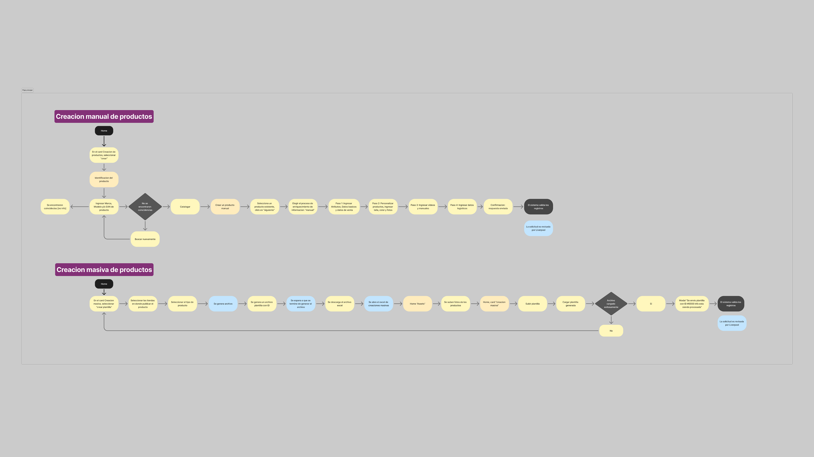
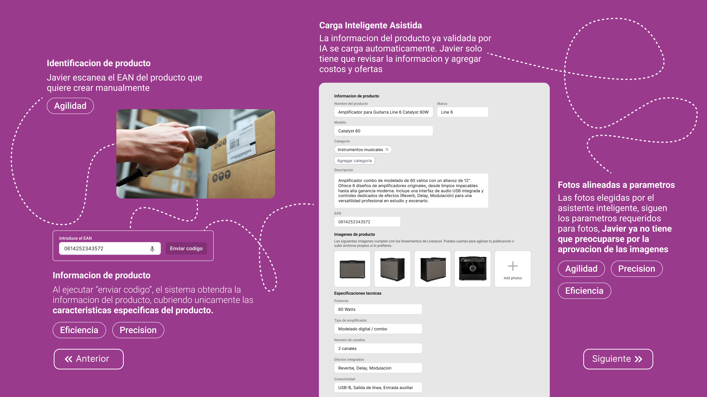
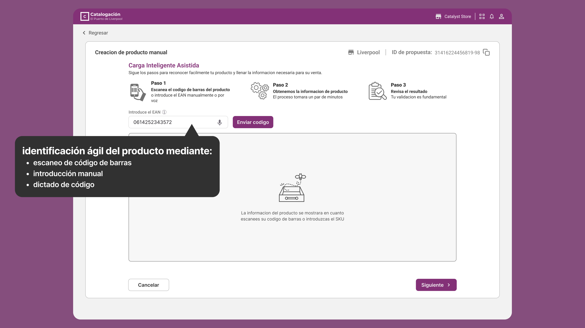
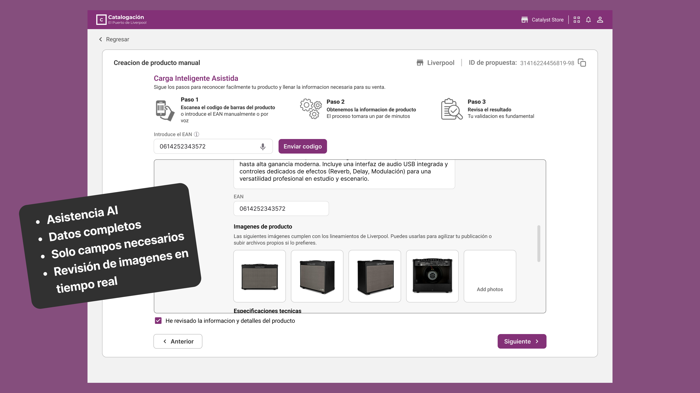

Rediseño del flujo de catalogación manual mediante Carga Inteligente Asistida para eliminar el re-trabajo operativo y reducir el Time-to-Market.
Como no contaba con acceso directo al sistema interno de la empresa, mi decisión fue investigar el funcionamiento de la plataforma desde fuera. Analicé a fondo la página pública de Liverpool y su canal oficial de YouTube para vendedores, revisando detalladamente los videotutoriales de creación manual y masiva de productos. Con esto, capturé las pantallas clave y las transformé en un diagrama de flujo real (AS-IS) para entender exactamente cómo funciona el proceso actual desde la raíz.

Para descubrir los verdaderos puntos de dolor, investigué comentarios y experiencias de vendedores reales en foros de discusión y comunidades digitales de e-commerce. Crucé estos testimonios empíricos con herramientas de IA para definir y priorizar los tres problemas críticos que impactan directamente al negocio:
Los usuarios navegan a ciegas en flujos de 'registros' y 'solicitudes' asíncronas. No reciben retroalimentación inmediata sobre la validez de sus archivos, congelando su operación.
La validación tardía y manual de fotografías frena por completo la venta inmediata, provocando semanas de inactividad de inventario y pérdidas económicas severas para el seller.
La validación tardía obliga a un ciclo de "prueba y error" que frustra al usuario y satura el soporte al estionar incidencias en lugar de prevenirlas.
Impacto Comercial Directo: Esta falta de agilidad para confirmar si la información y los recursos gráficos son correctos desincentiva la carga de inventario nuevo, mermando drásticamente la competitividad de Liverpool frente a otros referentes del ecosistema.
Javier es un administrador de catálogo digital que sufre con la lentitud y fragmentación del software actual. Su meta principal es publicar productos de alta rotación rápido para poder competir en el mercado. Sin embargo, pierde muchísimo tiempo llenando manualmente los mismos campos una y otra vez en formularios larguísimos, con la constante preocupación de esperar semanas para enterarse de que sus fotos fueron rechazadas por el sistema.
Validación de recursos gráficos en tiempo real y agilidad en el Time-to-Market.
El re-trabajo continuo por falta de feedback inmediato del sistema.
Mi propuesta cambia por completo la carga manual por un sistema inteligente que se anticipa al usuario. Al ingresar el código de barras (EAN) —ya sea escaneándolo, escribiéndolo o por comando de voz—, el sistema hace el trabajo pesado de forma automática: busca y trae toda la información del producto (como nombre, marca, modelo, categoría, descripción y fotografías) en un par de minutos, generando una propuesta única de publicación.
Esta solución elimina la necesidad de navegar por múltiples pantallas y pasos repetitivos, dándole a Javier la oportunidad de trabajar como un supervisor estratégico en lugar de un capturador de datos. Toda la información recuperada se revisa y aprueba a través de una casilla interactiva obligatoria, logrando que el producto quede publicado desde una sola pantalla unificada.

Mejoras clave que justifican las decisiones de ingeniería.

Dashboard inicial limpio: El estado en cero de la interfaz antes de arrancar el proceso manual.
🔍 Haz clic para expandir y revisar la interfaz limpia
Vista integral del flujo de Carga Asistida con anotaciones de diseño de experiencia y reducción de carga cognitiva.
🔍 Haz clic para expandir el mapa detallado de anotaciones